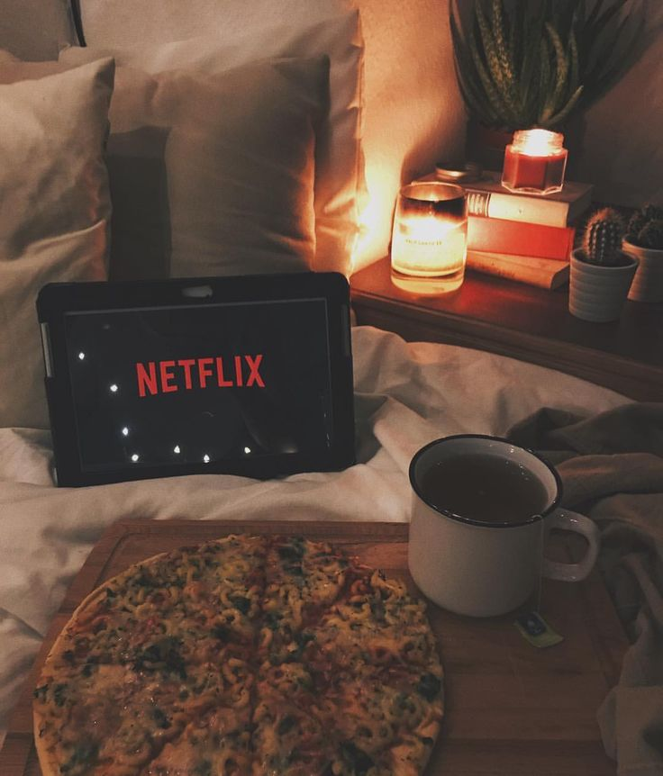

Arī šāds hobijs dod iespējas nemitīgi paplašināt savas zināšanas un arī būt lietas kursā par aktualitātēm. Protams, viss ir atkarīgs no tā, kādas pārraides tiek skatītas. “Keeping Up with the Kardashians” un tamlīdzīgi bezjēdzīgi šovi diez vai veicinās vērtīgo zināšanu līmeņa pieaugumu. Protams, pārzināt arī tādu saturu, dažās aprindās var būt noderīgi, jo tāda informācija kalpos par tēmu sarunām, bet varbūt tomēr labāk izvēlēties ko citu.
Kopumā televīzija piedāvā ziņu izlaidumus, dažādus zinātniskus, izglītojošus un vēsturisku raidījumus, kas noteikti būs vērtīgi. Kāda laba filma noderēs atbūtai un ikdienas rūpju nolikšanai malā. Ikvienam taču ir nepieciešams arī atslābināties un izklaidēties. Mūsdienās gan ar vien vairāk TV tiek aizstāts ar Netflix, HBO u.c. straumēšanas platformām, taču šī raksta ietvaros to uzskatām par to pašu TV skatīšanos.

Mans iepriekšējais hobijs.
Dotie atpakaļ uz sākum lapu.